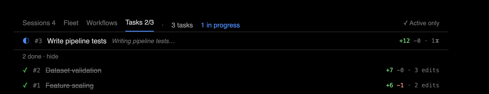
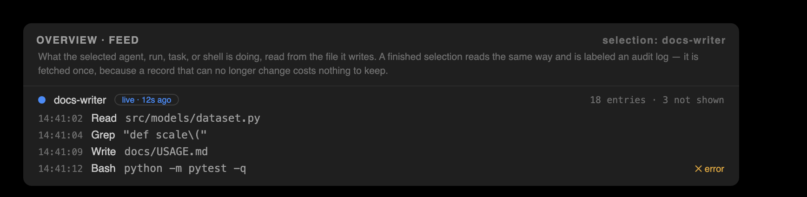
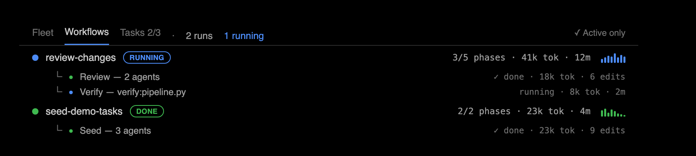
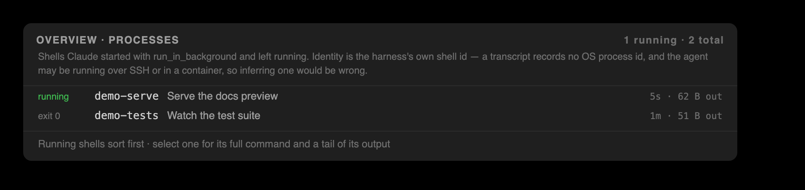

What the observatory records
Two sources feed everything shown: the transcript the agent already writes, and the store the capture hook writes. Neither costs tokens, and neither changes what the agent sees.
Session
A session is one Claude Code conversation. Claude Code assigns it an identifier and writes its transcript to disk; the observatory keeps one store per session and presents the session by name — its title or first prompt — with the raw identifier available in tooltips.
One session at a time is under review. The Sessions tab lists every session recorded for the workspace, ordered by when its conversation was last active, and selecting a row changes which session every window shows. Each row carries what that session did — ±lines, pending count, tokens, duration, and model · effort, and how many still await review — read from its store log and cached in a per-session sidecar keyed to that log, so a listing costs one stat per session and re-reads only what changed.

Transcript
The transcript is the event log Claude Code itself writes for a session: prompts, tool calls, results, reasoning, and plan updates, one JSON record per line. The observatory reads it as evidence and never writes to it. Because the reading happens outside the model loop, it costs no tokens and is invisible to the agent.
Store
The store is the observatory's own record: a per-session, append-only log of edit records, plus content-addressed snapshots of each file before and after a change. It is independent of git, holds every review decision, and can be handed to a teammate as a self-contained account of what the agent did and what you decided.
Hook
A hook is the local capture point. Claude Code invokes it before and after each file-changing tool call; the hook snapshots the file and appends an edit record to the store. It prints nothing and returns immediately, so the agent's behavior and context are unchanged.
Edit
An edit is one captured file change: the tool that made it, the file, the snapshots before and after, and a review status — pending until you decide, then accepted or reverted. The edit is the unit of review. Each edit opens as its own diff and carries its own undo, including changes made by shell commands. A file the hook cannot snapshot, such as a binary or an oversized file, is recorded as an explicit skip rather than dropped.
Action
An action is one tool call parsed from the transcript — a read, a search, a shell command, a web fetch, a subagent spawn, or a plan update — correlated with its result. Edits are the actions the hook also captured; every other action is reconstructed from the transcript alone.
Two groupings of one session
A session's work can be grouped by what you asked for, or by what Claude planned. The observatory maintains both and keeps them separate, because they answer different questions and are known with different certainty.
Prompt
A prompt is one turn you wrote, together with everything Claude produced while answering it. Its window runs from that prompt to the next one, and work belongs to the prompt that started it: a shell launched during prompt 4 remains prompt 4's even if it exits during prompt 7. Prompts are the only grouping ordered by your side of the conversation, and they are the scope the Prompts window sets over every other view.

Task
A task is one item of the plan Claude tracked for the session — an entry in its own numbered to-do list. Attribution is strict: an edit belongs to a task only if it was captured while that task was in progress. Gaps are not filled, and an edit that fits no interval stays unassigned rather than being guessed onto the nearest item. The Tasks tab, the cross-agent task log, the analytics rollups, and the task-keep family of review commands all use this one model, so a number shown anywhere is the same number acted on everywhere.
The two groupings answer different questions. Prompts follow your side of the conversation and cover the session completely, because every edit was made while answering something. Tasks follow Claude's plan and cover it partially by design, because the plan does not account for every moment of work — and the unassigned bucket says so rather than hiding it.

Change map
The change map is the summary the Overview draws for whatever is in scope — the session, one agent, one workflow run, or one prompt. It has two sections: the Folders strip, one tile per changed directory, ranked by lines changed and colored by review status — the top eleven, with the rest behind a +K more tile that expands the strip to all of them; and the Files ledger, every changed file ranked by churn. A summary bar totals the scope and names any active filter.

The views that present the record
Observations
Observations pairs each edit with the reasoning Claude recorded near it in the transcript, flags notable content such as debug statements, possible secrets, and large deletions, and shows each file's review history across sessions. Its Context section names what shaped the session — skills invoked, plans written, memory read, a resumed compaction — and labels every entry with how it is known: transcript when the session demonstrably used it, file-present when the file merely exists where Claude Code loads it.

Actions
The Actions view is the typed timeline of the session's actions, grouped by kind, with low-signal categories collapsed and errors always surfaced. It opens with any live conflicts and closes with the two audits: risk and egress.

Feed and audit log
A feed is the activity of one thing — the session, an agent, a workflow run, a task, or a process — read from the file that thing writes. While the source is still being written, the feed is live: it is polled, and its header states the age of the newest evidence rather than claiming real time. Once the source stops, the same view is an audit log — a record, not a stream — and polling stops. A capped feed states how many earlier entries it did not show.

Stats and Metrics
Stats reports the session's vitals and usage: the model and reasoning effort it runs on, cumulative tokens split into input, output, and cached, compaction history, and token plots by time window. Metrics reports derived numbers: line deltas, action and error counts, per-subagent duration and tokens, and tool latency. Stats describes consumption; Metrics describes activity.

Spotlight
Spotlight dims every line the agent did not change, so the changes read at full contrast in a heavily edited file.

Who did the work
Worktree and sibling
A git worktree is a separate checkout of one repository. Claude Code keys its sessions by directory, so sessions in two worktrees of one repository would otherwise appear unrelated; the observatory correlates them by reading each worktree's .git pointer files as plain files, never by running the git binary. A sibling is another session in the same project or, when the view is widened to the repository, in any of its worktrees.
Fleet
The fleet is every running agent across the repository's worktrees, unified into one board. Each row carries a live phase, worktree and branch, an activity sparkline, line deltas, tokens and time, and risk. Tracking is read-only and path-only: file names cross between agents, file contents never do.

Subagent
A subagent is an agent Claude spawned inside the session. It writes its own transcript (a sidechain), appears nested under its parent in the fleet, and carries its own timeline and metrics; its edits are attributed to it and reviewed like any others.
Workflow run
A workflow run is a scripted fan-out of agents, one level above subagents, that Claude Code's orchestration executes deterministically. The observatory mines each run from its own transcripts and state file: name, running or done state, per-phase progress, and per-agent tokens, time, and edits. An interrupted run that never recorded completion is not shown as running.

Process
A process is a background shell the session launched with run_in_background. Its identity is the harness's own shell id: a transcript records no operating-system process id, and the agent may be running over SSH or in a container, so inferring one from local processes would be wrong. A process with no recorded end reports its runtime up to the last moment the session is known to have existed.

Phase
A phase is a fleet row's live state: working, awaiting input, awaiting permission, idle, or done. A phase inferred from inactivity rather than evidence is marked with ~ and presented as a heuristic, never asserted.
Live conflict
A live conflict is one file holding pending edits from two or more siblings, at least one of them active. Detection is by path only. Live conflicts lead the Actions view because they need attention before the agents collide further.
What the audits assert
Both audits report what the session exercised, never what it was permitted: Claude Code writes nothing to the transcript when it asks for approval, so hand-approved and auto-approved work are indistinguishable from the outside. The audits therefore state what ran.
Risk
Risk is the audit of what the session did that could cause harm. It flags destructive or privileged shell commands — for example rm -rf, git reset --hard, forced pushes, curl piped to a shell, sudo, and reads or writes of credential files — as HIGH or MED rows stating the reason in plain words, and it lists the edits that landed outside the workspace, which no workspace-relative file list can show.
Egress
Egress is the audit of where the session reached beyond the workspace: web hosts, MCP servers, network shell commands, and files read from outside the workspace. Each destination carries a scope: remote when it left the machine, outside when it stayed on the machine but left the workspace (the JSON value is local), and unknown when the destination could not be classified. Outside is a fact about a path; unknown is an admission; the two are never merged.
Compaction
A compaction is the harness summarizing the conversation when context runs out: everything above the boundary reaches later turns as a summary rather than as what was actually said. The observatory marks each boundary in the Actions timeline, counts them per prompt and in Stats, and reports each event's own drop — the context before minus the context after — never the harness's cumulative figure, which would overstate every compaction after the first.
The review verbs
Two verb pairs cover every decision, distinguished by how much they act on.
Keep and Undo
Keep and Undo act on a single edit. Keep marks it accepted. Undo reverts it on disk with a position-anchored merge that preserves the edits around it — later changes to the same file stay in place.
Accept, Reject, and Clear
Accept and Reject act on a scope — a file, a folder, a prompt, a task, or the whole session — by keeping or reverting every pending edit in that scope. Clear drops a scope's resolved edits from view without touching disk. The resulting edit states are accepted and reverted on every surface; the store encodes them as kept and undone.
Undo conflict
An undo conflict is a refused revert: a later edit genuinely overlaps the change, so applying the undo would corrupt it. The file is left untouched, the conflict is shown, and an explicit --force whole-file restore is offered instead of a silent overwrite.
A worked example
From a session produced by claude-observatory demo --fast, reading the session as the one prompt that produced it, then accepting one task's strict span from the terminal:
$ claude-observatory prompts Prompts 1 asked · 1 produced edits · 5 edit(s) total · session demo-75273bac #1 Add feature scaling and dataset validation to the training pipeline, then bring in tests and docs. 129ms 5e 5f 4fo · 7k tok · 3t · 1a · 1w · ⤺ work is attributed to the prompt that STARTED it — a shell launched here belongs here even if it exits later $ claude-observatory task-keep a671afe1744f ✓ kept 1 edit(s) in task a671afe1744f
The task identifier comes from the Tasks tab or from changemap --json; it is a content hash of the to-do, so it stays the same across the intervals in which Claude worked on that item.